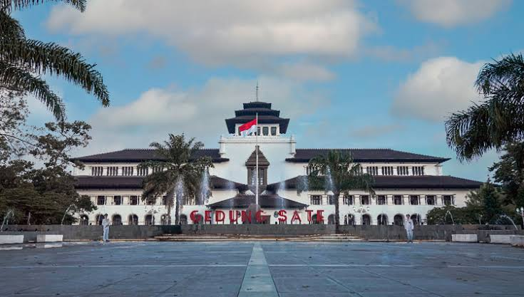
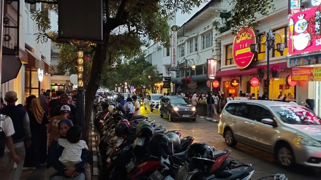
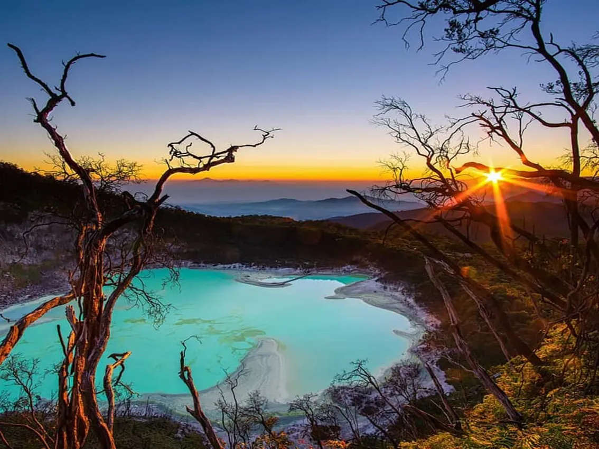
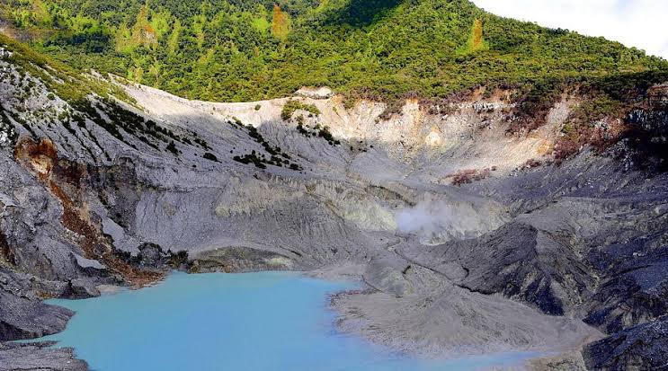

Profil Kota Bandung
Profil Kota Bandung Kota Bandung terletak di wilayah Jawa Barat dan merupakan Ibukota Propinsi Daerah Tingkat I Jawa Barat. Kota Bandung terletak diantara 107 0 Bujur Timur dan 6 0 55' Lintang Selatan. Lokasi Kotamadya Bandung cukup strategis, dilihat dari segi komunikasi, perekonomian maupun keamanan. Secara topografis KotaBandung terletak pada ketinggian 768 meter di atas permukaan laut, titik tertinggi di daerah Utara dengan ketinggian 1.050 meter dan terrendah di sebelah Selatan adalah 675 meter di atas permukaan laut. Di wilayah Kotamadya Bandung bagian Selatan permukaan tanah relatif datar, sedangkan di wilayah kota bagian Utara berbukit-bukit sehingga merupakan panorama yang indah. Keadaan Geologis dan tanah yang ada di Kota Bandung dan sekitarnya terbentuk pada zaman Kwartier dan mempunyai lapisan tanah alluvial hasil letusan gunung Takuban Perahu. Jenis material di bagian Utara umumnya merupakan jenis andosol, dibagian Selatan serta Timur terdiri atas sebaran jenis alluvial kelabu dengan bahan endapan tanah liat. Di bagian Tengah dan Barat tersebar jenis andosol. Iklim kota Bandung dipengaruhi oleh iklim pegunungan yang lembab dan sejuk. Pada tahun 1998 temperatur rata-rata 23,5 o C, curah hujan rata-rata 200,4 mm dan jumlah hari hujan rata-rata 21,3 hari perbulan.
Sejarah kota bandung
Sekitar akhir tahun 1808/awal tahun 1809, Bupati beserta sejumlah rakyatnya pindah dari Krapyak mendekati lahan bakal ibukota baru. Mula-mula Bupati tinggal di Cikalintu (daerah Cipaganti), kemudian pindah ke Balubur Hilir, selanjutnya pindah lagi ke Kampung Bogor (Kebon Kawung, pada lahan Gedung Pakuan sekarang). Bupati memimpin sejumlah rakyatnya, termasuk penduduk Kampung Balubur Hilir, membuka hutan pada lahan bakal ibukota (daerah Cikapundung hilir). Tidak diketahui secara pasti, berapa lama Kota Bandung dibangun. Akan tetapi, Kota itu dibangun bukan atas prakarsa Daendels, melainkan atas prakarsa Bupati Bandung, bahkan pembangunan kota itu dipimpin langsung oleh Bupati. Dengan kata lain Bupati R.A. Wiranatakusumah II adalah pendiri (The Founding Father) Kota Bandung.
Pada 1955 Bandung menjadi tuan rumah Konferensi Asia-Afrika di Gedung Merdeka. Sebelumnya, pada 1946 terjadi peristiwa Bandung Lautan Api, saat sebagian besar warga membakar rumah mereka dan meninggalkan kota sebagai bagian dari perjuangan kemerdekaan.
Galeri Kota Bandung
Berikut adalah beberapa tempat menarik yang menjadi kebanggaan Kota Bandung.
Galeri/foto-foto
Berikut adalah beberapa tempat wisata terkenal yang menjadi daya tarik Kota Bandung dan sekitarnya.

Gedung Sate
Bangunan ikonik dan bersejarah Kota Bandung.

Jalan Braga
Kawasan wisata dengan suasana klasik.

Kawah Putih
Wisata alam dengan danau kawah yang indah.

Tangkuban Parahu
Gunung wisata dengan pemandangan kawah.
Tentang Bandung
| Provinsi | Jawa Barat |
| Status | Ibu kota provinsi |
| Julukan | Kota Kembang, Paris van Java |
| Ketinggian | Sekitar 768 meter di atas permukaan laut |
Bandung tak hanya dikenal sebagai Kota Kembang, dengan banyaknya pesona yang dimiliki Bandung seakan memiliki magnet tersendiri yang membuat wisatawan tak pernah bosan datang ke Bandung. Maka tidak mengherankan jika baru-baru ini Bandung berhasil masuk jajaran World Trending Destinations 2024 versi Tripadvisor kategori “Best of the Best Destinations Travelers Choice”. Bandung berada di urutan ke-15 dari 25 kota di dunia dan menjadi satu-satunya kota dari Indonesia yang masuk daftar tersebut. Ada banyak alasan mengapa Bandung bisa masuk dalam jajaran World Trending Destinations 2024 versi Tripadvisor. Bisa dibilang Bandung memiliki paket wisata yang komplet. Mulai dari bentang alam yang memesona, wisata sejarah, budaya yang kental, hingga banyak kuliner tradisional lezat menggugah selera yang menjadi daya tarik wisata Kota Kembang.
Tempat Wisata
- Gedung Sate, bangunan ikonik dengan ornamen di puncaknya.
- Jalan Braga, kawasan bangunan tua dan kafe.
- Gunung Tangkuban Parahu di Lembang.
- Kawah Putih di Ciwidey.
- Alun-alun dan Masjid Raya Bandung.
Makanan Khas
- Batagor dan siomay
- Seblak
- Surabi
- Mie kocok
- Cireng dan bandros
Oleh-oleh
- Brownies kukus
- Peuyeum (tape singkong)
- Keripik dan makanan ringan
- Pakaian dari distro dan factory outlet